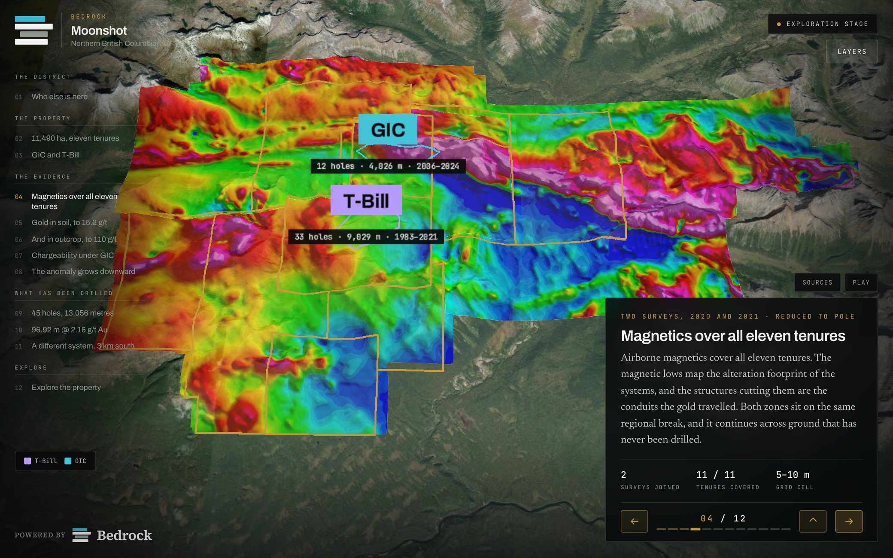
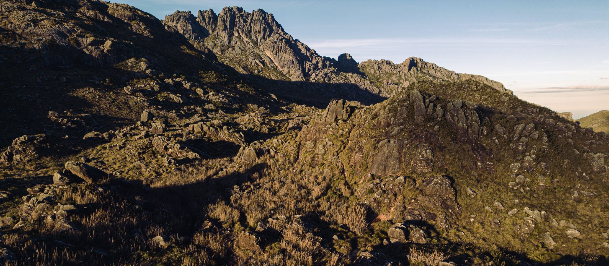

01/ 03
Who else is on this ground.
Every neighbouring tenure resolved to its holder and named where it sits, so a district position reads in one look instead of a page of claim numbers.

Every neighbouring tenure resolved to its holder and named where it sits, so a district position reads in one look instead of a page of claim numbers.
Survey grids draped on real terrain at true scale, so a chargeability high is somewhere you could walk to rather than a raster floating in a report.
Read any hole broadside with its assay intervals on the trace and the full sample record beside it. The number behind the picture is always one click away.
One model carries the whole story, from a first pitch to a production decision, updated as fast as the work itself moves.
Asset estimates and project economics render as visuals anyone can read in seconds — no geology background, no spreadsheet required.
Every visual traces back to the underlying estimate. Nothing is simplified past the point of accuracy — the story and the data are the same document.
The same model holds up on a conference stage, in a boardroom, or shared one-to-one with an analyst.
As drilling, engineering, and permitting move forward, update the model instead of rebuilding the deck from scratch.
The companies we work with trade on
Fly to any hole and read its assays down the hole, or highlight the ground a target sits on — live, while the question is being asked, rather than reading an intercept table out of a news release.
A resource statement says how much metal is in the ground. It cannot show which of it you reach in year one and which waits behind three cutbacks.
The board, your analysts, and your shareholders work from the same up-to-date view of the project, so a milestone update means the same thing in every room it's shown in.

Drill core, assay results, and block models feed the same visuals investors see — nothing is redrawn or approximated for effect.
FIG. 04 — WILLIAMS, LIVE OPEN FULL SCREEN ↗
Figure 04 is Omega Pacific's Williams deck itself, running on this page — the Toodoggone, British Columbia, built from the issuer's own drilling and geophysical surveys, and the same deck the machines at the top of this page are showing. Figures 01 to 03 are the Bedrock demo project, which is fabricated end to end — the block model, the drill holes, the claim boundaries and the holders around them are all invented, and Bedrock labels them on screen, which is the red banner visible in those figures.
"By making complex geology and data easy to grasp, Bedrock helps mining companies communicate their potential, build investor confidence, and stand out in a competitive market for capital."
